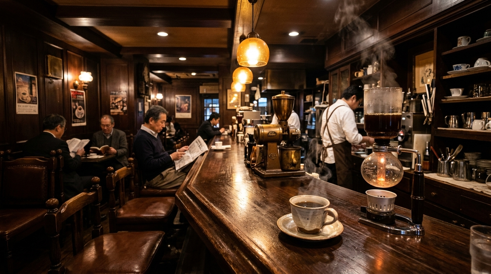
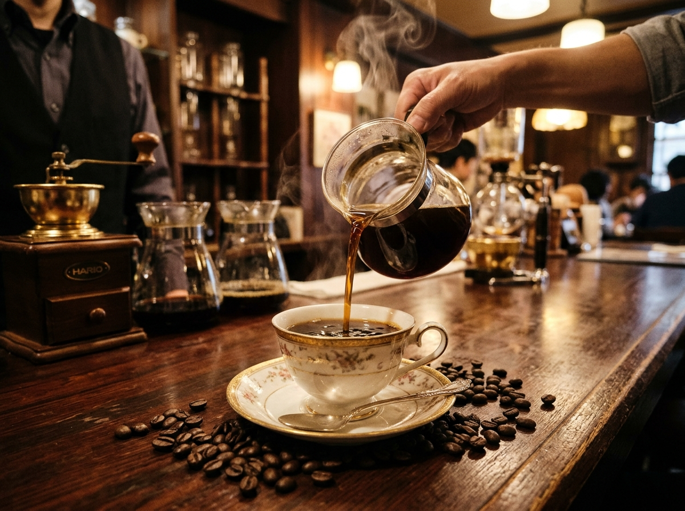

壱
少量直火の自家焙煎
毎朝、店内のヴィンテージ直火焙煎機で生豆の状態を見極めながら深煎り（シティ〜フレンチロースト）に焼き上げます。香ばしい苦味と奥行きのある甘みが特徴です。

毎朝、店内のヴィンテージ直火焙煎機で生豆の状態を見極めながら深煎り（シティ〜フレンチロースト）に焼き上げます。香ばしい苦味と奥行きのある甘みが特徴です。
華やかな香りを閉じ込める「サイフォン抽出」と、舌触り滑らかで濃厚なコクを生む「熟成ネルドリップ」。豆の個性に合わせて抽出法を使い分けています。
真鍮のランプが灯す琥珀色の照明と、真空管アンプから静かに流れるクラシック音楽。読書や思索に耽るひとときを邪魔しない空間をお約束します。

コロンビア・スプレモをベースに、ブラジル・サントス、マンデリンG1、モカ・マタリを独自の黄金比で配合。サイフォンのフラスコ内で琥珀色に輝く瞬間を見極め、温めた有田焼・ボーンチャイナの器へと注ぎます。
澄んだ琥珀色の液色と、芳醇な香り・すっきりとした後口を愉しめる当店の代表作。
通常の1.5倍の自家焙煎豆を使用し、フランネルの布フィルターで一滴ずつ点てた重厚な一杯。
1974年創業・自家焙煎とサイフォン珈琲の純喫茶
PURE COFFEE HOUSE
SINCE 1974